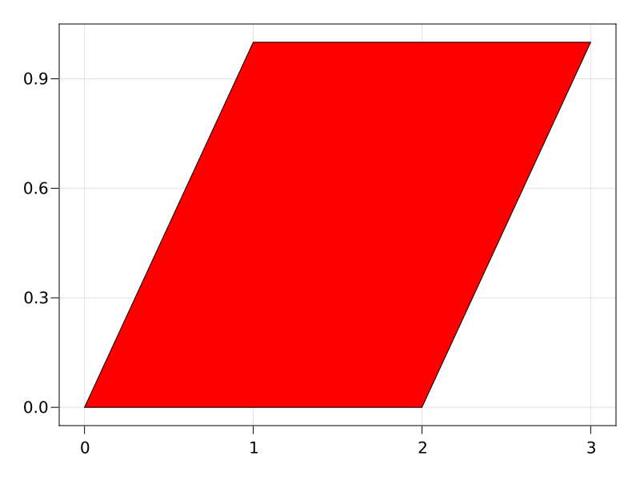
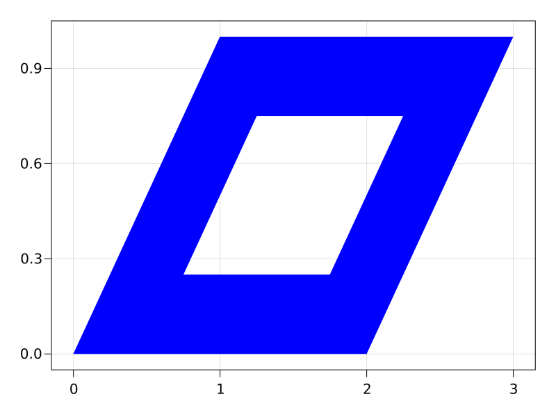
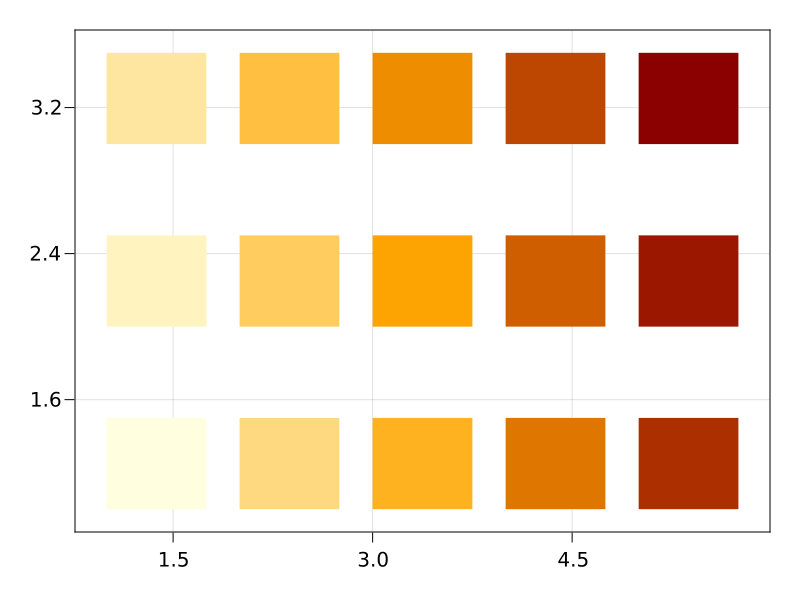
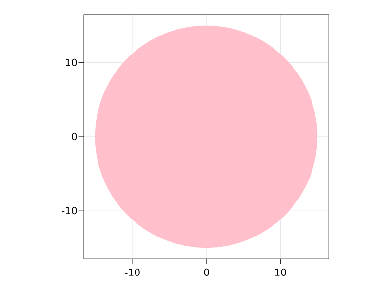
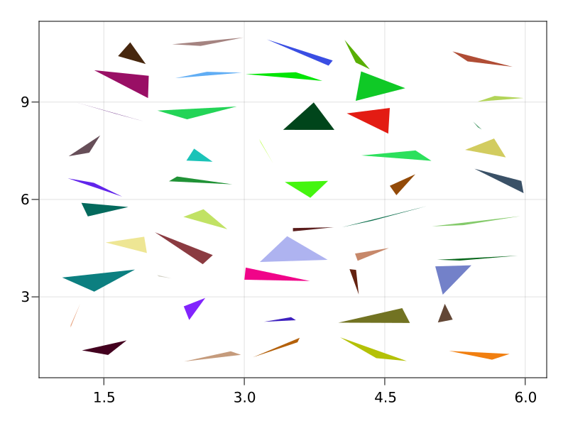

poly
AbstractPlotting.poly — Functionpoly(vertices, indices; kwargs...)
poly(points; kwargs...)
poly(shape; kwargs...)
poly(mesh; kwargs...)Plots a polygon based on the arguments given. When vertices and indices are given, it functions similarly to mesh. When points are given, it draws one polygon that connects all the points in order. When a shape is given (essentially anything decomposable by GeometryBasics), it will plot decompose(shape).
poly(coordinates, connectivity; kwargs...)Plots polygons, which are defined by coordinates (the coordinates of the vertices) and connectivity (the edges between the vertices).
Attributes
Available attributes and their defaults for Combined{AbstractPlotting.poly,T} where T are:
color :black
colormap :viridis
colorrange AbstractPlotting.Automatic()
linestyle "nothing"
overdraw false
shading false
strokecolor RGBA{Float32}(0.0f0,0.0f0,0.0f0,0.0f0)
strokewidth 1.0
transparency false
visible trueExamples
using CairoMakie
using AbstractPlotting.GeometryBasics
f = Figure(resolution = (800, 600))
Axis(f[1, 1])
poly!(Point2f0[(0, 0), (2, 0), (3, 1), (1, 1)], color = :red, strokecolor = :black, strokewidth = 1)
f
using CairoMakie
using AbstractPlotting.GeometryBasics
f = Figure(resolution = (800, 600))
Axis(f[1, 1])
# polygon with hole
p = Polygon(
Point2f0[(0, 0), (2, 0), (3, 1), (1, 1)],
[Point2f0[(0.75, 0.25), (1.75, 0.25), (2.25, 0.75), (1.25, 0.75)]]
)
poly!(p, color = :blue)
f
using CairoMakie
using AbstractPlotting.GeometryBasics
f = Figure(resolution = (800, 600))
Axis(f[1, 1])
# vector of shapes
poly!(
[Rect(i, j, 0.75, 0.5) for i in 1:5 for j in 1:3],
color = 1:15,
colormap = :heat
)
f
using CairoMakie
using AbstractPlotting.GeometryBasics
f = Figure(resolution = (800, 600))
Axis(f[1, 1], aspect = DataAspect())
# shape decomposition
poly!(Circle(Point2f0(0, 0), 15f0), color = :pink)
f
using CairoMakie
using AbstractPlotting.GeometryBasics
f = Figure(resolution = (800, 600))
Axis(f[1, 1])
# vector of polygons
ps = [Polygon(rand(Point2f0, 3) .+ Point2f0(i, j))
for i in 1:5 for j in 1:10]
poly!(ps, color = rand(RGBf0, length(ps)),
axis = (backgroundcolor = :gray15,))
f